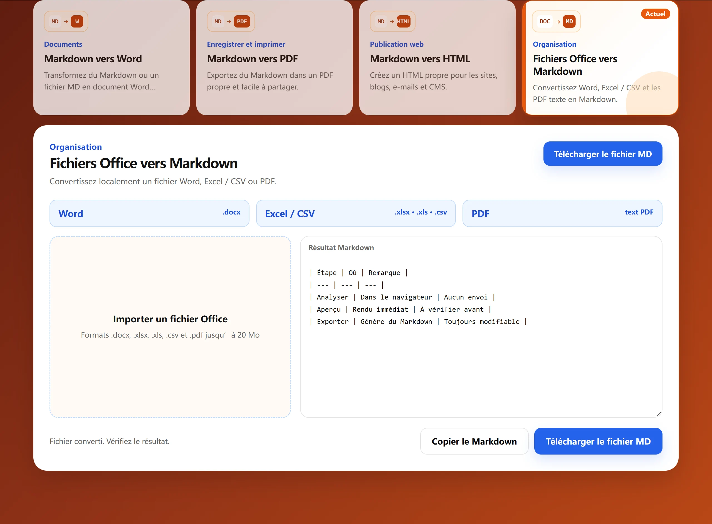

Guide de conversion de tableaux
Comment convertir Excel ou CSV en Markdown ?
Les tableaux Markdown sont plus faciles à modifier et à réutiliser que des captures d’écran, pour passer des données de feuille de calcul dans des README, Notion, Obsidian, de la documentation ou des prompts IA.

La méthode la plus rapide
- Ouvrez l’outil Excel / CSV vers Markdown ;
- Choisissez un fichier
.xlsx,.xlsou.csv; - Sélectionnez la feuille quand le classeur en contient plusieurs ;
- Copiez le Markdown ou téléchargez un fichier
.md.
Préparer la feuille de calcul
- Utilisez des noms de colonnes courts et uniques sur la première ligne ;
- Supprimez les lignes et colonnes vides qui ne servent qu’à l’aération visuelle ;
- Évitez les cellules fusionnées, que les tableaux Markdown ne prennent pas en charge ;
- Confirmez les résultats de formules avant la conversion ;
- Découpez les tableaux très larges en tables plus petites et ciblées.
Pourquoi les tubes sont-ils échappés ?
Markdown utilise | pour séparer les cellules. Quand une cellule contient son propre tube, le convertisseur ajoute un antislash pour que la structure du tableau reste valide.
Comment corriger l’encodage CSV ?
Exportez la source en « CSV UTF-8 » depuis Excel ou une autre application de feuille de calcul. Le fichier Markdown téléchargé utilise aussi UTF-8.
Où utiliser le résultat ?
Le tableau généré convient aux README GitHub, à la documentation technique, à Notion, Obsidian, aux bases de connaissances et aux flux IA. Pour les très grands tableaux, ne gardez que les lignes et colonnes utiles à la tâche.
Que devient un classeur à plusieurs feuilles
Une seule feuille est convertie à la fois. Après l’import, un sélecteur apparaît quand le classeur contient plus d’une feuille, et l’outil affiche la première par défaut. Changez de feuille et relancez pour récupérer les autres.
Trois choses que les feuilles de calcul font et que Markdown ne peut pas
- Les cellules fusionnées.Une plage fusionnée ne garde sa valeur que dans la cellule en haut à gauche ; les cellules couvertes arrivent vides, et les en-têtes fusionnés doivent souvent être resaisis à la main.
- La mise en forme.Couleurs, bordures et formats numériques relèvent de la présentation, et les tableaux Markdown n’en emportent aucun.
- Les formules.Seule la valeur calculée est transférée, jamais la formule elle-même.
Quelles entrées fonctionnent, et lesquelles non
| Entrée | Prise en charge | Note |
|---|---|---|
| .xlsx, .xls, .csv | Oui | Converti en tableau à tubes |
| .docx | Oui | Paragraphes et tableaux deviennent du Markdown |
| PDF avec texte sélectionnable | Oui | La couche texte doit exister |
| PDF numérisé ou image | Non | Exige une OCR avant conversion |
| .doc historique | Non | Enregistrez d’abord en .docx |
Questions sur la conversion de feuilles de calcul
Puis-je convertir toutes les feuilles d’un coup ?
Non. Une feuille est convertie par exécution ; choisissez une autre feuille dans le sélecteur et relancez.
Pourquoi mon en-tête fusionné est-il incomplet ?
Une plage fusionnée ne stocke sa valeur que dans la cellule en haut à gauche : les cellules couvertes arrivent vides et l’en-tête doit être resaisi manuellement.
Cela fonctionne-t-il avec un PDF numérisé ?
Pas directement. Un PDF numérisé n’a pas de couche texte : il exige une OCR avant la conversion.
Si le tableau semble faux
- La première ligne est devenue l’en-tête à la place d’un vrai en-tête.Les tableaux Markdown traitent toujours la ligne du haut comme en-tête : une feuille sans ligne d’en-tête produit un tableau trompeur.
- Des colonnes vides apparaissent en trop.La feuille source porte de la mise en forme sur des cellules inutilisées ; supprimez ces colonnes et importez de nouveau.
- Les nombres sont du texte aligné à gauche.C’est ainsi que la valeur était stockée. Convertissez d’abord la colonne en format numérique dans la feuille.